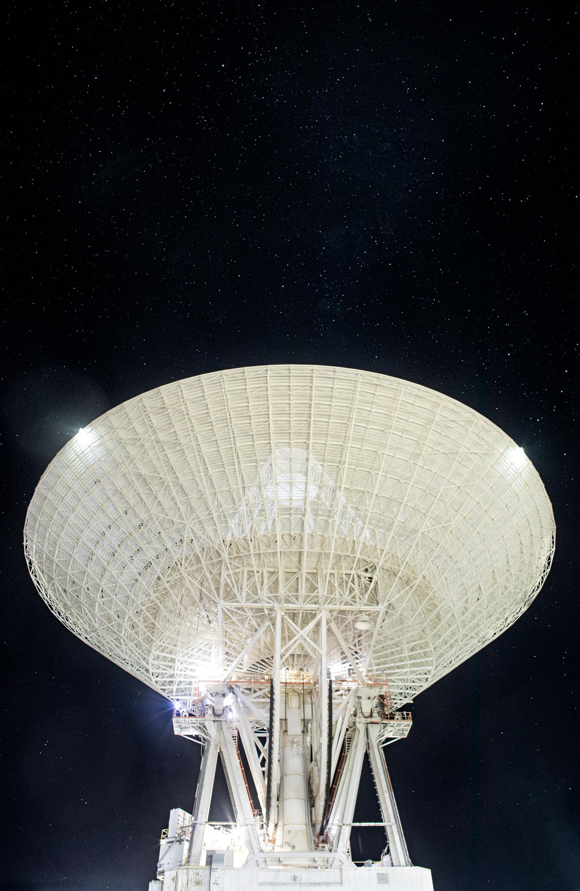

Sensor data into decision advantage.
We serve the agencies that collect, exploit, and protect the nation's most sensitive information. We secure the networks that carry it, turn remote-sensing observation into intelligence analysts can act on, and apply AI and data fusion to surface signal from noise. Cleared people, a Top Secret facility, and 49+ years of mission delivery stand behind the work.
Built for the work that cannot leak.
We support the intelligence agencies and the defense organizations that depend on collection, exploitation, and dissemination. The mission demands secure systems, trusted people, and analysis that holds up under scrutiny.
The Intelligence Community runs on data that is sensitive at every stage: from the sensor, across the network, through the model, to the analyst. SSAI engineers the systems that keep that pipeline secure and turns the observations moving through it into intelligence. We bring zero-trust cybersecurity, geospatial and remote-sensing expertise, and AI/ML data fusion built on decades of work with the nation's most demanding science missions.
We hold a Top Secret facility clearance and we field cleared scientists, engineers, data analysts, and IT professionals. The same discipline that puts instruments in orbit and keeps missions running around the clock is the discipline the IC requires: precise, accountable, and trusted with what cannot fail.

NASA / JPL-CaltechHow we serve the Intelligence Community.
We map our capabilities to the IC mission, outcome first: secure the network, exploit the sensor, and fuse the data into intelligence analysts can trust.
Secure IT and zero-trust by default
We build and defend the networks that carry sensitive information. Zero-trust architecture, continuous monitoring, and AI/ML anomaly detection close the gaps an adversary looks for, so the data stays protected from the sensor to the analyst.
Remote sensing into intelligence
We turn raw observation into intelligence the mission can act on. Geospatial analysis, remote sensing, and data assimilation convert sensor feeds into decision advantage, the same exploitation discipline proven across the nation's most demanding observation missions.
Signal from noise, at machine speed
We apply AI and machine learning to fuse data across sources and surface what matters. Models trained for anomaly detection and pattern recognition compress the time between collection and insight, so analysts spend their attention where it counts.
Systems engineered to standard
We engineer the systems the mission depends on: systems engineering, software at CMMI Level 3, and integration and testing. The rigor that fields instruments for flagship missions is the rigor we bring to IC systems that cannot fail.
People and a facility you can trust
We field cleared scientists, engineers, analysts, and IT professionals, and we operate under a Top Secret facility clearance with ITAR registration. The clearances and the credentials are in place before the work begins.
Capability, end to end
We bring secure IT, remote-sensing exploitation, and AI/ML data fusion together under one accountable partner, with three subsidiaries extending our reach across cyber, engineering, and manufacturing.
The credentials and capability behind the work.
We earn trust the way the mission requires it: with the clearances, certifications, and proven capabilities that a partner must hold to work where the data is most sensitive.
Top Secret facility, ITAR registered
We operate under a Top Secret facility clearance and ITAR registration, with cleared personnel ready for the mission. The foundation the IC requires is already in place.
ISO 9001:2015, AS9100, CMMI Level 3
We hold the certifications that govern quality, aerospace systems, and process maturity. The same standards that govern flight hardware govern the systems we build for sensitive missions.
Remote sensing, cyber, and AI/ML in service
We assimilate sensor data, defend networks under zero-trust, and apply AI/ML for anomaly detection across 160+ missions and 49+ years. The capabilities the IC needs are capabilities we already deliver.
Explore the other markets.
We field five capabilities across six markets. See where else our work takes us, and the capabilities behind every one.
Defense & National Security
Mission systems, secure IT, and engineering for the organizations that defend the nation.
MarketFederal Civilian
Science, data, and IT for the civilian agencies that explore and observe.
MarketState & Local
Geospatial, environmental, and IT capability for state and local government.
MarketCommercial
Engineering, data, and cyber for commercial partners in the mission space.
MarketOCONUS & International
Mission delivery and support beyond the continental United States.
CapabilitiesFive capabilities, fielded
See the full span of science, engineering, space operations, manufacturing, environmental intelligence, and cyber.
Put our capability to work.
We turn sensor data into decision advantage and keep the systems that carry it secure. Start with contracting, or review the capability statement to see how we are procured.